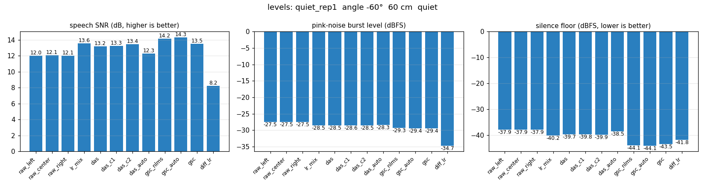
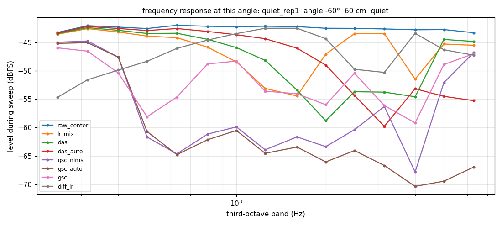
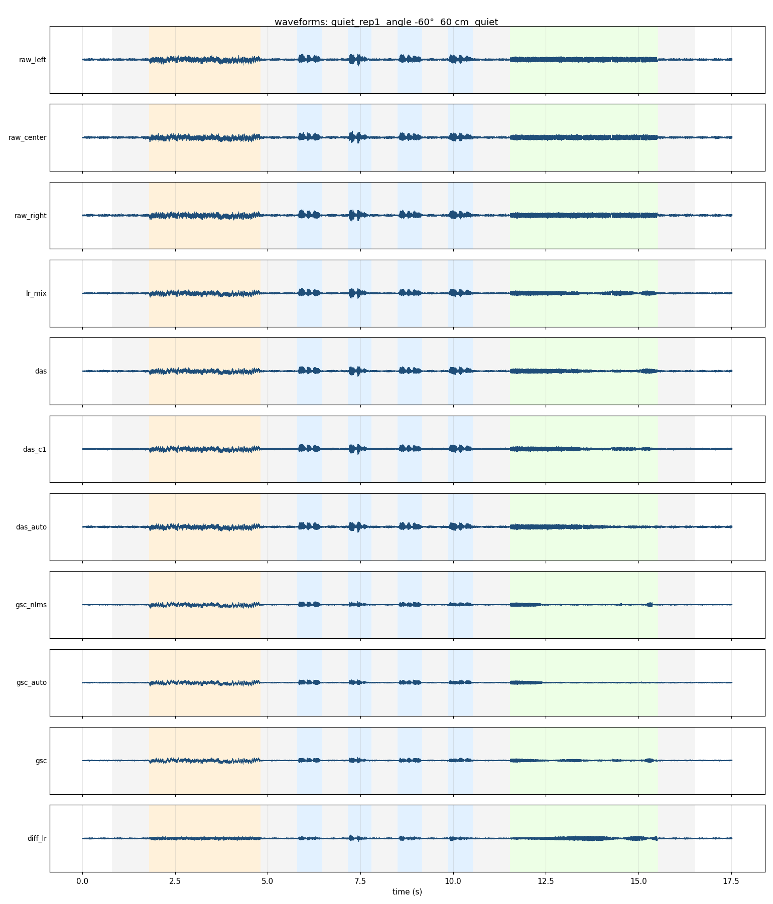
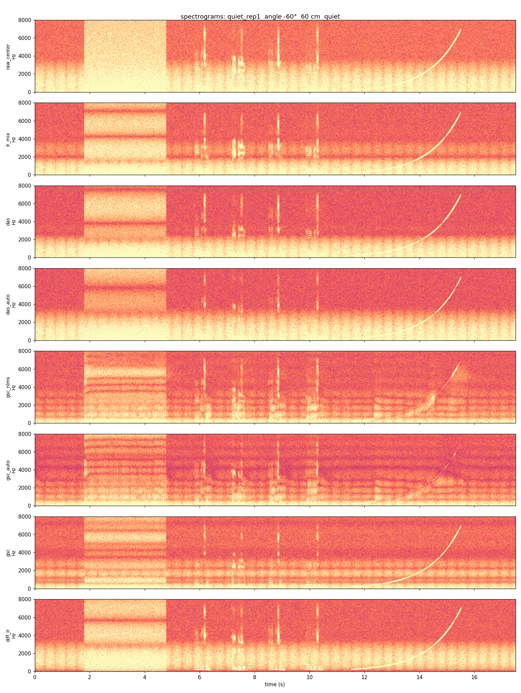

angle -60°, 60 cm, quiet, 17.53 s. Clip offset 0.8 s (confidence 0.929).
Microphones hear the source at -59° (L-R delay -5.62 samples, peak 10.8).
| path | rms_dbfs | speech_snr_db | noise_level_dbfs | silence_floor_dbfs | interf_rejection_db | interf_rejection_lf_db | snr_under_interference_db | speech_preservation | peak | clips |
|---|---|---|---|---|---|---|---|---|---|---|
| raw_left | -29.83 | 12.04 | -27.54 | -37.89 | 0.8969 | 6647 | 0 | |||
| raw_center | -29.83 | 12.06 | -27.54 | -37.89 | 0.9586 | 6475 | 0 | |||
| raw_right | -29.83 | 12.05 | -27.53 | -37.88 | 0.8972 | 6463 | 0 | |||
| lr_mix | -31.41 | 13.58 | -28.47 | -40.2 | 0.9876 | 5569 | 0 | |||
| das | -31.48 | 13.2 | -28.53 | -39.71 | 5667 | 0 | ||||
| das_c1 | -31.54 | 13.26 | -28.55 | -39.76 | 0.993 | 5667 | 0 | |||
| das_c2 | -31.35 | 13.45 | -28.46 | -39.93 | 0.9812 | 5718 | 0 | |||
| das_auto | -31.11 | 12.31 | -28.33 | -38.51 | 0.9787 | 5836 | 0 | |||
| gsc_auto | -34.27 | 14.33 | -29.41 | -44.15 | 0.6009 | 4140 | 0 | |||
| diff_lr | -35.0 | 8.25 | -34.7 | -41.81 | -0.0009 | 3816 | 0 | |||
| gsc | -33.98 | 13.54 | -29.39 | -43.53 | 0.8558 | 4020 | 0 | |||
| gsc_nlms | -34.05 | 14.17 | -29.31 | -44.08 | 0.5916 | 4059 | 0 |



